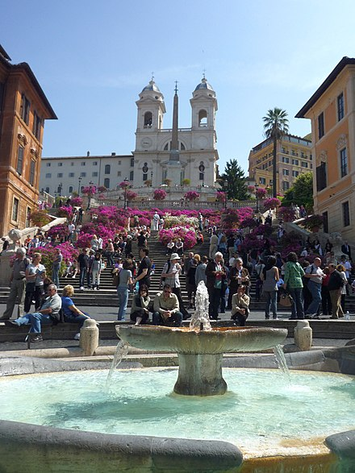

Tourism
Rome today is one of the most important tourist destinations of the world, due to the incalculable immensity of its archaeological and artistic treasures, as well as for the charm of its unique traditions, the beauty of its panoramic views, and the majesty of its magnificent "villas" (parks). Among the most significant resources are the many museums – Musei Capitolini, the Vatican Museums and the Galleria Borghese and others dedicated to modern and contemporary art – aqueducts, fountains, churches, palaces, historical buildings, the monuments and ruins of the Roman Forum, and the Catacombs. Rome is the third most visited city in the EU, after London and Paris, and receives an average of 7–10 million tourists a year, which sometimes doubles on holy years. The Colosseum (4 million tourists) and the Vatican Museums (4.2 million tourists) are the 39th and 37th (respectively) most visited places in the world, according to a recent study.[129]
Rome is a major archaeological hub, and one of the world's main centres of archaeological research. There are numerous cultural and research institutes located in the city, such as the American Academy in Rome,[130] and The Swedish Institute at Rome.[131] Rome contains numerous ancient sites, including the Forum Romanum, Trajan's Market, Trajan's Forum,[132] the Colosseum, and the Pantheon, to name but a few. The Colosseum, arguably one of Rome's most iconic archaeological sites, is regarded as a wonder of the world.[133][134]
Rome contains a vast and impressive collection of art, sculpture, fountains, mosaics, frescos, and paintings, from all different periods. Rome first became a major artistic centre during ancient Rome, with forms of important Roman art such as architecture, painting, sculpture and mosaic work. Metal-work, coin die and gem engraving, ivory carvings, figurine glass, pottery, and book illustrations are considered to be 'minor' forms of Roman artwork.[135] Rome later became a major centre of Renaissance art, since the popes spent vast sums of money for the constructions of grandiose basilicas, palaces, piazzas and public buildings in general. Rome became one of Europe's major centres of Renaissance artwork, second only to Florence, and able to compare to other major cities and cultural centres, such as Paris and Venice. The city was affected greatly by the baroque, and Rome became the home of numerous artists and architects, such as Bernini, Caravaggio, Carracci, Borromini and Cortona.[136] In the late 18th century and early 19th century, the city was one of the centres of the Grand Tour,[137] when wealthy, young English and other European aristocrats visited the city to learn about ancient Roman culture, art, philosophy, and architecture. Rome hosted a great number of neoclassical and rococo artists, such as Pannini and Bernardo Bellotto. Today, the city is a major artistic centre, with numerous art institutes[138] and museums.
Rome has a growing stock of contemporary and modern art and architecture. The National Gallery of Modern Art has works by Balla, Morandi, Pirandello, Carrà, De Chirico, De Pisis, Guttuso, Fontana, Burri, Mastroianni, Turcato, Kandisky, and Cézanne on permanent exhibition. 2010 saw the opening of Rome's newest arts foundation, a contemporary art and architecture gallery designed by acclaimed Iraqi architect Zaha Hadid. Known as MAXXI – National Museum of the 21st Century Arts it restores a dilapidated area with striking modern architecture. Maxxi[139] features a campus dedicated to culture, experimental research laboratories, international exchange and study and research. It is one of Rome's most ambitious modern architecture projects alongside Renzo Piano's Auditorium Parco della Musica[140] and Massimiliano Fuksas' Rome Convention Center, Centro Congressi Italia EUR, in the EUR district, due to open in 2016.[141] The convention centre features a huge translucent container inside which is suspended a steel and teflon structure resembling a cloud and which contains meeting rooms and an auditorium with two piazzas open to the neighbourhood on either side.